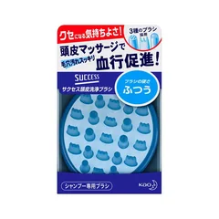

まず洗いたい人

サクセス
頭皮洗浄ブラシ ふつう
1個
¥653税込・出典掲載価格
選び方と声
- 選ぶ条件：洗い残しが気になって、手ごろな頭皮ブラシから始めたい人。花王の公式：シャンプー専用ブラシ。髪と頭皮を十分ぬらし、シャンプーを指でよく泡立ててから、ブラシを頭皮に軽く当てて1か所数回、左右に小刻みに動かす。強くこすらない。
- 頭皮がすっきりして泡立ちもよくなる、握りやすく力を入れすぎずに使える、という声が多い
気になる声気になる点：硬さがちょうどいいという人と、やや硬いという人に分かれる。頭皮に傷・はれもの・湿疹があるときは使わない
販売価格・容量・送料はリンク先でご確認ください